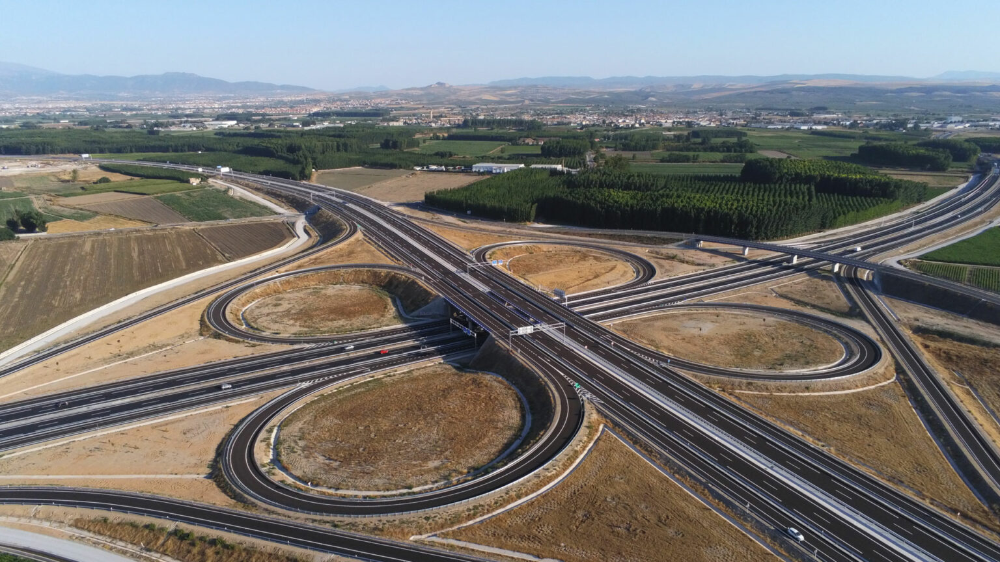
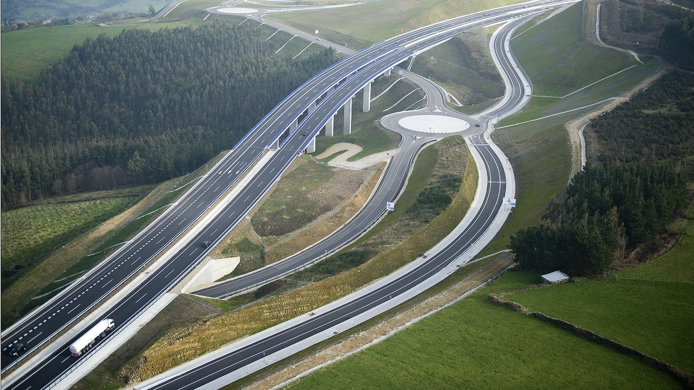

En California, ejecutamos el contrato más importante de la historia de la compañía en Estados Unidos: la ampliación y mejora de la autopista Interstate 405. El proyecto de diseño y construcción, con el que se mejorarán 25,7 kilómetros, incluye trabajos sobre 18 puentes en una autopista altamente congestionada. La realización del contrato permitirá reducir significativamente el tiempo de recorrido para los ciudadanos que la empleen. En EE UU, la compañía también ha participado en el diseño, construcción y financiación del mayor intercambiador de autopistas de Miami, el SR 826/836.
EAsimismo, nos hemos adjudicado el proyecto de diseño y construcción por un importe de 310,2 millones de euros (368 millones de dólares) en Florida, otorgado por el Departamento de Transporte y Obras Públicas del condado de Miami-Dade.
El objetivo es la conversión de South Corridor (South Dade Transitway) al tránsito rápido de autobuses (Bus Rapid Transit, BRT). Este corredor es uno de los seis incluidos en el Plan Estratégico de Tránsito Rápido del Área de Miami (también denominado SMART), y el primero en avanzar hacia la fase de construcción.
El contrato incluye varios componentes entre los que se incluyen la construcción de estaciones BRT en South Corridor y de un parking disuasorio. El proyecto se desarrolla a lo largo de 32 kilómetros de vía de circulación exclusiva entre las estaciones de la Calle SW 344 y Dadeland South (adyacente a la US‐1), la carretera Old Dixie y la Avenida Flagler, y conecta cinco municipios en el sur de Florida.
En México, hay que hacer referencia a las fases I, II y III del Circuito Exterior Mexiquense, 110 km de autopista que enlaza las áreas más densamente pobladas del centro de México; la Autopista Urbana Norte, viaducto elevado y urbano de 8,9 km de longitud, o el Viaducto Bicentenario, con 23,5 km de longitud y que conecta Ciudad de México con el municipio de Cuautitlán Izcalli.
A estos proyectos se suman 110 km de la Ruta 60, una de las redes de comunicación viarias más importantes de Chile, integrada en el futuro Corredor Bioceánico, zona de tránsito del comercio terrestre entre Chile-Argentina, Brasil y Uruguay y el tramo Santiago-Los Vilos, perteneciente a la Ruta 5, principal vía de conexión entre Santiago y el norte de Chile. Dentro de las autopistas urbanas resalta el particular diseño en trinchera de doble altura de la Autopista Américo Vespucio Oriente. En Perú destaca el diseño y construcción de 263,7 km de segunda calzada para la Red Vial 4 y los 136 km de mejora y rehabilitación de los tramos IV y VII de la carretera Ayacucho-Abancay y el tramo Andahuaylas-Huancabamba de la carretera Andahuaylas-Pampachiri-Negromayo. Y en Colombia, la construcción de la línea de Metroplus Itagüí y Parques del Río Medellín 1 Fase, además de la mejora del corredor Málaga-Los Curos a 27 km, la construcción del tramo Quindío para culminar el Cruce de la Cordillera Central, que forma parte de una de las infraestructuras viarias más importantes de Colombia, y la construcción de la Avenida El Rincón desde la Avenida Boyacá hasta la Carrera 91.
En Europa, la actividad se centra, principalmente, en España donde hemos acometido, entre otras iniciativas, la construcción del tramo Lindín-Careira, integrado en la Autovía del Cantábrico A-8; el viaducto Fernández Casado del embalse de Barrios de Luna, perteneciente a la Autopista Ruta de la Plata y en su momento récord mundial de luz para puentes atirantados con tablero de hormigón; el puente de Arcos de Alconétar sobre el río Tajo también en la Autopista de la Ruta de la Plata y récord de arcos metálicos abatidos, o los túneles de la Autopista Eje Aeropuerto en Madrid, los más seguros de Europa, según el informe EuroTAP 2006.
Los túneles urbanos de Kralovo Pole, en Brno (República Checa) y el túnel gemelo bajo el río Vístula, en Gdanks (Polonia), son dos de las actuaciones más relevantes acometidas en Centroeuropa.
